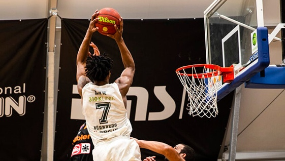
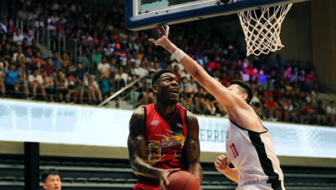
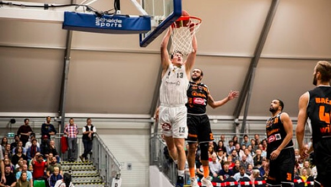
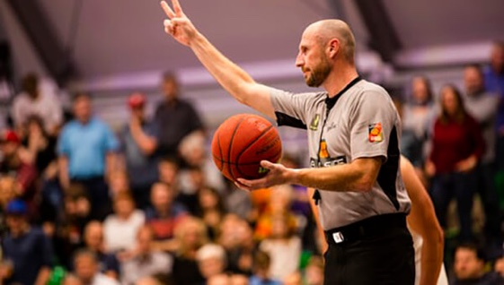
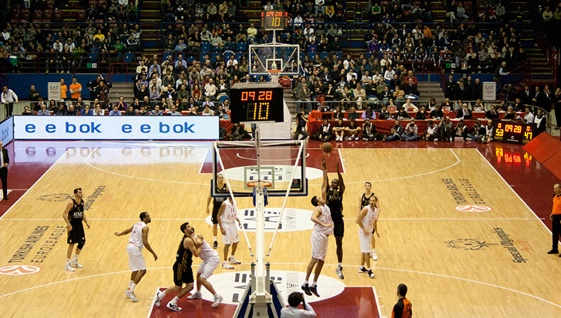

Euroleague Response to COVID-19
Due to the need to keep fans, participants and game staff safe during the COVID-19 global pandemic, Turkish Airlines EuroLeague teams will begin the 2020-21 season with restrictions on attendance at their games.
The restrictions depend on national and/or local health guidelines that all Euroleague Basketball clubs are committed to fulfilling in order to help ensure the safe environments required to ultimately defeat the coronavirus.
League Leaders
Index Rating
- N.Mirotic
- M.James
- A.Shved
- N. De Colo
- W. Tavares
Points
- M. James
- A. Shved
- J. Boyd
- N. Mirotic
- N. Nedovic
Rebounds
- N. Milutinov
- W. Tavares
- A. Polonara
- N. Mirotic
- J. Reynolds
Assists
- A. Shved
- P. Henry
- N. Calathes
- K. Pangos
- K. Sloukas
Steals
- P. Henry
- L. Vildoza
- S. Larkin
- S. McKissic
- N. De Colo
Blocks
- G. Papagiannis
- W. Tavares
- J. Mickey
- B. Lammers
- B. Dunston
Standings
- FC Barcelona
- CSKA Moscow
- AX Armani Exchange Milan
- FC Bayern Munich
- Anadolu Efes Istanbul
- Real Madrid
- Fenerbahce Beko Istanbul
- Zenit St. Petersburg
- Zalgiris Kaunas
- TD Systems Baskonia Vitoria-Gasteiz
- Valencia Basket
- LDLC ASVEL Villeurbanne
- Olympiacos Piraeus
- Maccabi Playtika Tel Aviv
- ALBA Berlin
- Panathinaikos OPAP Athens
- Crevena Zvezda mts Belgrade
- Khimiki Moscow Region
-

Maccabi vs. ASVEL game suspended, rescheduled
The Round 30 game between Maccabi Playtika Tel Aviv and LDLC ASVEL Villeurbanne, was originally scheduled on Thursday, March 18, has been suspended and rescheduled for Sunday, April 4, at 20:05 CEST.
Mar 12, 2021 | Arvydas Sabonis
-

Euroleague MVP Race: Round 28
Mike James leads the MVP race, but Nikola Mirotic is not far behind. Walter Tavares, remains in the top 5, with Nando De Colo and Vasilije Micic entering the conversation.
Mar 12, 2021 | Ivanka Petrovic
-

Who's Hot: Jordan Mickey, Khimki
Few players have hurt opposing defenses more than Mickey has over the past three rounds, and Mickey has been one of the hottest players in the league since late January.
Mar 12, 2021 | Moritz Wagner
-

Euroleague Fantasy Challenge Round 28 Winner
The season’s 28th EuroLeague Fantasy Challenge winner is Mate Kokicar whose team Kapitan beat everyone else in Round 28 with a scoreof 253.5.
Mar 11, 2021 | Arvydas Sabonis
-

Punter, Hines were Milan's wrecking crew in Moscow
Kevin Punter and former CSKA Moscow star Kyle Hines led the charge for AX Armani Exchange Milan in recording the team's first road win at CSKA in more than a decade.
Mar 11, 2021 | Ivan Blanovic
Euroleague Basketball was created in 2000, replacing FIBA Euroleague after years of FIBA operating European basketball. The 18 clubs in the league race for the final four to compete for the Euroleague Cup. With several notable players from all around the world, including Luka Doncic, Pau Gasol and Ricky Rubio, The Euroleague is one of the most popular basketball leagues in the world, and expanding more every season. The league has some of the greatest players from all around the globe, and The Euroleague embrasses the many cultures throughout Europe.
"I think the reason why I've been able to have success on the basketball court here overseas is because I've been able to kind of embrace the culture, have an opportunity to learn so much. Every city I've gone, every place, every country I've gone, I've had an opportunity to learn so much."
- Kyle Hines, AX Armani Exchange Milan